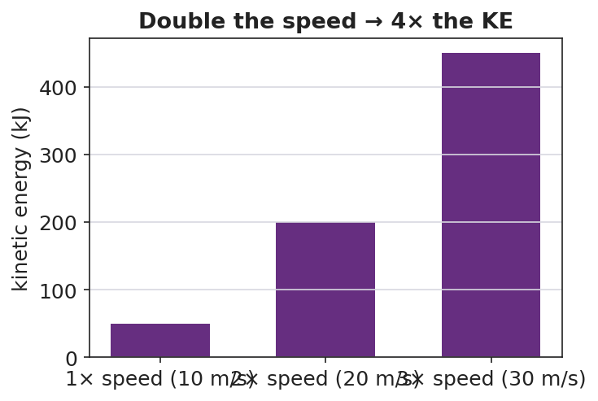

Unit: Work, Energy & Power — Lesson 03: Kinetic Energy
Phenomenon
A car at 20 mph and the same car at 40 mph: the speed only doubled, but the distance needed to stop roughly quadruples. The energy of motion is not growing the way you'd expect.
Driving Question
How does the energy of a moving object depend on its speed — and why does a small speed increase make it so much harder to stop?
Notice & Wonder
Look at the stopping-distance pattern. Write what you notice and what you wonder.
Initial Model
Write your prediction before any calculating: "When the car's speed doubles, I predict its energy of motion becomes ____ times bigger, because ____."
Investigate
The mass is fixed at 1000 kg. Slide the speed and watch the marker climb the KE = ½mv² curve. The curve bends upward because KE depends on speed squared. Predict the factor before you double the speed.
Mass m = 1000 kg (fixed) · KE = ½mv² = 50000 J
Make It Make Sense
- A 2.0 kg ball moves at 3.0 m/s. Calculate its kinetic energy. Show KE = ½mv².
- Two identical cars move down the road. Car A goes 15 m/s; car B goes 30 m/s. How many times more kinetic energy does car B have? Explain using v².
- Your friend says "double the speed, double the energy." Use the formula to correct your friend.
Stuck? Sentence frame
"When speed becomes ___ times bigger, KE becomes ___ times bigger, because the speed is ___ in ½mv²."
Key Vocabulary (max 3)
- kinetic energy — the energy an object has because of its motion; KE = ½mv², in joules
- mass — the amount of matter in an object (kg); KE is proportional to mass (first power)
- speed — how fast an object moves (m/s); KE is proportional to speed squared (v²)
Revise Your Model
Make a bar chart of KE at 1×, 2×, and 3× speed for the same car. Label each bar with its factor. Revise your prediction: when speed doubles, KE becomes how many times bigger, and why?

Return to the Phenomenon
In one sentence, explain why a car at 40 mph needs about four times the stopping distance of a car at 20 mph. Use KE = ½mv².
Exit Ticket + Closing Reflection
- A 1500 kg car travels at 10 m/s.
(a) Calculate its kinetic energy. Show KE = ½mv².
(b) The car speeds up to 20 m/s. What is its new KE, and by what factor did it change?
(c) In one sentence, explain why doubling speed makes the car so much harder to stop. - Reflection: What is one thing that surprised you today? Who helped you make sense of something?